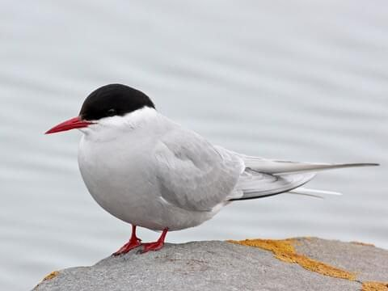
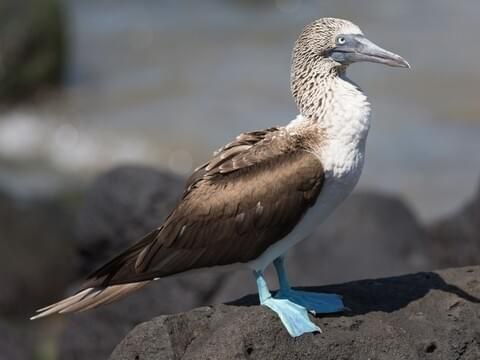
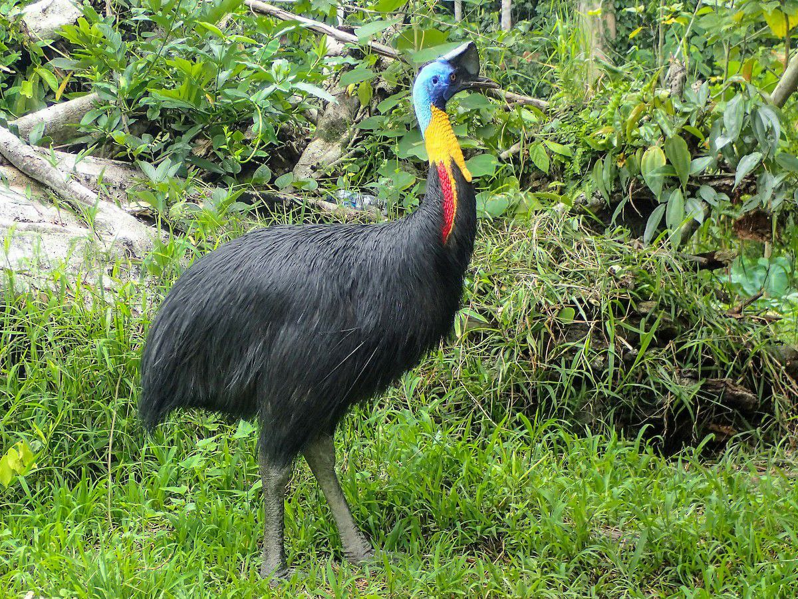

Birds are warm-blooded vertebrates belonging to the class Aves. They are
characterized by feathers, beaks without teeth, lightweight skeletons,
and the ability to lay hard-shelled eggs. Most birds can fly, thanks to
their strong chest muscles and wings, although some species like
ostriches, emus, and penguins are flightless. There are over 10,000
known species of birds found on every continent, from icy Antarctica to
tropical rainforests. Birds have excellent vision, which helps them
hunt, navigate, and avoid danger. Many species are known for their
melodious calls and songs, used for communication and attracting mates.
Birds play vital roles in the environment. They help pollinate plants,
disperse seeds, and control insect populations. Some birds, like eagles
and vultures, are scavengers and help clean up the environment by
feeding on dead animals. Birds also hold cultural and spiritual
significance in many societies and are a major focus of birdwatching, a
popular hobby around the world.
Arctic Tern

Scientific Name: Sterna paradisaea
Type :
Non-raptor
The Arctic Tern is a small seabird renowned not for its size, but for
its extraordinary endurance and adaptability. Known as one of the
greatest travelers in the animal kingdom, this bird annually performs
a round-trip migration from the Arctic to the Antarctic, covering tens
of thousands of kilometers. With elegant white plumage, sharp red
beaks, and streamlined bodies, Arctic Terns are as beautiful as they
are biologically fascinating.
Habitat
Arctic Terns breed in Arctic and sub-Arctic regions, including
Greenland, Iceland, Alaska, and northern parts of Canada, Europe, and
Russia. Their nesting sites are typically coastal tundra, rocky
islands, and beaches. During the non-breeding season, they fly to the
Antarctic Circle, spending their time in cold southern oceans, far
away from human settlements. This extreme migration allows them to
experience two summers per year, giving them more daylight than any
other animal on Earth.
Feeding Habits
Arctic Terns are carnivorous, feeding mainly on small fish and marine
invertebrates like shrimp and krill. They forage by hovering above the
water and diving to catch prey near the surface. Sometimes, they also
pick insects from land or water, especially during breeding when food
must be plentiful for their chicks. Their sharp eyesight helps them
spot fish underwater, and their fast, agile flight aids in quick
capture.
Migration
Every year, the Arctic Tern travels from the Arctic to the Antarctic
and back again, making a round trip of about 70,000 to 80,000
kilometers (43,000 to 50,000 miles)—the longest known migration in the
animal kingdom. They follow a zigzag route, catching favorable wind
currents and stopping at key feeding sites along the way. This journey
is not only a test of endurance but also a demonstration of how finely
attuned these birds are to Earth's geography and weather systems.
Breeding and Life Cycle
Breeding takes place during the Arctic summer, when daylight is nearly
continuous. Arctic Terns are monogamous and often return to the same
breeding grounds—and even the same mate—year after year. They lay 1 to
3 eggs in shallow ground nests lined with grass and feathers. Both
parents share in incubation and feeding the chicks.
Once hatched, the chicks are semi-precocial: they are born with down
and can walk, but they rely on their parents for food. Fledging occurs
after about three to four weeks, and not long after, the long
migration south begins.
Niche and Ecological Role
The Arctic Tern plays a key role in the marine ecosystem. As predators
of small fish and invertebrates, they help control these populations.
They are also indicators of ocean health; changes in their migration
patterns or breeding success can reflect shifts in fish populations or
ocean temperatures due to climate change.
Moreover, they have few natural predators due to their remote nesting
locations, though eggs and chicks are vulnerable to foxes, gulls, and
skuas. Humans pose threats through habitat disturbance, climate
change, and pollution. Fortunately, they are currently listed as Least
Concern on the IUCN Red List, though local populations may vary in
status.
Facts
An individual Arctic Tern can fly over 2.5 million kilometers in its
lifetime—enough to reach the Moon and back more than three times.
They have a lifespan of around 30 years, meaning they may see more
daylight than any other animal.
During migration, they feed along the way, often stopping in the North
Atlantic, off the coast of Africa, or near New Zealand, depending on
the route.
Despite their graceful appearance, they are highly aggressive around
their nests and will dive-bomb humans and predators alike.
Blue-Footed Booby

Scientific Name : Sula nebouxii
Type :
Non-raptor
The Blue-footed Booby is one of the most iconic seabirds in the world,
instantly recognizable by its bright turquoise-blue feet and comical
behavior. Native to the eastern Pacific coastline, this bird combines
beauty, skill, and quirkiness, making it a favorite among wildlife
watchers and scientists alike. Behind its playful appearance lies a
bird perfectly adapted to life at sea and a fascinating case of
natural selection and mate choice.
Habitat and Distribution
The Blue-footed Booby is mainly found along the coastal regions of the
eastern Pacific Ocean, particularly:
The Galápagos Islands (home to a large and well-known population)
Western coasts of Central and South America, especially in countries
like Ecuador, Peru, and Mexico.
They inhabit rocky shores, islands, and coastal cliffs, nesting in
open, flat areas free from vegetation. Their habitat is always close
to rich fishing grounds, since they rely heavily on marine life to
survive and raise their young.
Feeding Habits
Blue-footed Boobies are skilled marine predators, feeding mainly
on:
Small fish such as anchovies, sardines, and mackerel
Occasionally, squid and crustaceans.
Their feeding technique is both elegant and powerful. They fly high
above the water, then dive headfirst at high speeds, folding their
wings just before hitting the surface like a dart. These plunge-dives
can be so precise that they catch fish swimming below the surface.
They often hunt in groups, making their dives together to confuse and
trap schools of fish.
Boobies have excellent eyesight and can spot fish from remarkable
heights. Their nostrils are permanently closed to avoid water rushing
in during dives—they breathe through their mouths instead.
Breeding and Courtship
One of the most famous aspects of the Blue-footed Booby is its
courtship dance—a truly unforgettable sight. The male uses his bright
blue feet to attract a mate by performing a high-stepping dance,
lifting each foot slowly and dramatically while showing off to the
female. He may also present small stones or twigs and spread his wings
in a sky-pointing display.
What makes this dance even more interesting is that:
Foot color matters: The bluer the feet, the more attractive the male.
Brighter feet signal good health and strong genes.
If a male’s feet are pale, a female may reject him, as it could
indicate poor nutrition or illness.
After mating, the female lays 1 to 3 eggs in a small scrape on the
ground. Both parents take turns incubating the eggs with their feet,
which have special blood vessels to transfer heat. Chicks hatch after
about 40–45 days and are fed regurgitated fish by both parents.
Adaptations for Survival
The Blue-footed Booby is well adapted to its marine environment:
Webbed blue feet aid in swimming and are key to mate selection.
Streamlined bodies and strong wings allow for long-distance flying and
agile diving.
Salt glands above their eyes help remove excess salt from seawater,
which they excrete through their nostrils.
Excellent vision helps them track prey from high above the ocean.
Despite their awkwardness on land, they are powerful and graceful in
the air and water.
Niche and Ecological Role
As top-level fish predators, Blue-footed Boobies help maintain the
balance of fish populations in the ocean. Their diet and behavior are
influenced by ocean conditions, making them indicators of ocean
health. During events like El Niño, when water temperatures rise and
fish become scarce, booby populations may suffer reduced breeding
success.
Their colonies also contribute guano (droppings), which enriches the
surrounding soil and supports other island life.
Unique & Fascinating Facts
Both parents share duties equally—from incubation to feeding, making
them excellent partners.
They can dive from heights of up to 25 meters (80 feet) and swim
underwater to chase fish.
Chicks compete for food, and sometimes siblicide occurs when food is
scarce—the stronger chick may push its sibling out of the nest.Despite
their silly name, Blue-footed Boobies are intelligent and strategic
hunters.
Their feet lose brightness if they are not well-fed or healthy, making
foot color an honest signal of fitness.
Cassowary

Type :
Non-raptor
The cassowary is one of the most remarkable birds walking the Earth
today. With its dinosaur-like appearance, vibrant coloring, and
reputation as one of the most dangerous birds in the world, the
cassowary is as fascinating as it is fearsome. Native to the tropical
forests of northern Australia, New Guinea, and surrounding islands,
this flightless bird plays a vital role in its ecosystem—and commands
respect from anyone who crosses its path.
Species of Cassowary
There are three species of cassowary:
1.
Sourthern Cassowary (Casuarius casuarius)– the most well-known and widely studied
2. Northern Cassowary (Casuarius unappendiculatus)
3. Dwarf Cassowary (Casuarius bennetti)
The Southern Cassowary is the largest and most iconic, often referred
to when people mention “the cassowary.”
Habitat
Cassowaries inhabit dense tropical rainforests, swamps, and mangroves
in northern Australia, New Guinea, and nearby islands. They prefer
areas with thick vegetation that provides cover and abundant food
sources. These birds are solitary and territorial, often establishing
large home ranges that they defend from other cassowaries. Their
primary range includes:
Northern Queensland, Australia+
New Guinea and surrounding islands
Parts of Indonesia
They rely on thick vegetation and ample fruit supplies, as they are
mostly forest dwellers, using their powerful legs to move through the
underbrush and escape danger.
Physical Characteristics
The cassowary looks like something out of prehistory:
It can grow up to 6.6 feet (2 meters) tall and weigh over 130 pounds
(60 kg). It has coarse black feathers that resemble hair. Its head and
neck are brightly colored in blue, red, and purple, with color
intensity increasing during mating season. On top of its head sits a
casque—a helmet-like structure made of keratin and bone, whose exact
function is still debated. It may help with sound amplification, head
protection, or moving through dense vegetation. But the most iconic
(and dangerous) part of the cassowary is its feet: each has three
toes, and the inner toe sports a dagger-like claw up to 5 inches (12
cm) long—capable of inflicting serious injuries.
Feeding Habits
Cassowaries are omnivorous, but their diet is largely frugivorous
(fruit-based). They consume:
A wide variety of fallen tropical fruits
Fungi, insects, small animals, and even dead mammals if necessary
Their strong beaks and digestive systems allow them to eat toxic or
tough fruits that other animals cannot. Remarkably, cassowaries play a
crucial ecological role as seed dispersers. Many rainforest plants
rely on cassowaries to eat their fruit and deposit the seeds—often far
away, complete with natural fertilizer from their droppings.
Behavior and Movement
They are:
Excellent runners, capable of reaching 50 km/h (31 mph) through dense
jungle
Strong swimmers, often crossing rivers and even swimming in the
ocean
Silent movers, but they can produce deep booming sounds, which may
help them communicate through thick forests
Despite their shy nature, when threatened—especially if cornered or
protecting eggs-they can become extremely aggressive. There have been
recorded attacks on humans, sometimes causing serious injuries or,
rarely, death.
Breeding and Parenting
Cassowary reproduction is as fascinating as the bird itself. In a
reversal of typical bird parenting roles:
Females are larger, more colorful, and dominant. After mating, the
female lays 3–6 large, green eggs in a shallow ground nest. She then
leaves—and the male takes full responsibility, the male incubates the
eggs for about 50 days, and then raises the chicks for up to 9 months.
During this time, he defends them fiercely, teaches them how to find
food, and ensures they survive in the wild jungle environment.
Niche and Ecological Role
Cassowaries are known as “keystone species” because of their crucial
role in seed dispersal. Some rainforest trees and plants depend
entirely on cassowaries to reproduce. Without them, these ecosystems
would collapse. Cassowaries also help shape the forest structure
by:
Spreading large seeds over great distances, enabling rare or
endangered trees to survive Because they can consume over 150
different types of fruit, they’re sometimes called the gardeners of
the rainforest.
Niche Facts and Fascinating Details
The cassowary casque continues growing throughout its life and may
help age or identify individuals. Cassowaries cannot fly, but their
strong legs make them powerful runners and jumpers. The cassowary’s
call—a deep, low-frequency "boom"—is one of the lowest-pitched bird
calls in the world, possibly used for long-distance communication in
dense forests. In Aboriginal culture, cassowaries are respected and
sometimes feared—appearing in stories and myths as guardians of the
forest. Despite their size, they are masters of camouflage in the
underbrush, often going unnoticed even when nearby.
Drongo
Type :
Non-raptor
The Drongo is a small yet bold bird found across Africa, Asia, and
Australia, famous for its aggressive attitude, sharp intelligence, and
mimicry skills. Despite its modest size and sleek black appearance,
the Drongo has earned a reputation as a feathered outlaw, fearlessly
taking on larger birds and even tricking other animals to steal food.
This combination of agility, bravery, and deception makes it one of
the most intriguing birds in the animal kingdom.
Classification and Species
Drongos belong to the family Dicruridae, and there are about 25
species of them. The most well-known include:
Fork-tailed Drongo (Dicrurus adsimilis) – common in sub-Saharan
Africa
Black Drongo (Dicrurus macrocercus) – widespread in Asia
Ashy Drongo (Dicrurus leucophaeus) – found in Southeast Asia
Spangled Drongo (Dicrurus bracteatus) – found in Australia and New
Guinea
All drongos share some key traits: mostly black or dark grey plumage,
red or dark eyes, and a distinctive forked tail that often gives the
impression of elegance in flight.
Pictured above is the
Habitat and Distribution
Drongos inhabit a wide range of environments including:
Savannas, Urban gardens and farmland, Open woodlands, Forest edges
They are territorial and often perch in open view, scanning their
surroundings for insects or intruders.
Feeding Habits
Drongos are insectivorous, feeding on:
Beetles, Grasshoppers, Wasps, Termites, Ants. Occasionally small
birds, lizards, or fruits.
They catch prey by:
Aerial hunting (snatching insects in mid-air). Ground pouncing after
spotting movement from a perch. But what makes drongos truly unique is
their food-stealing strategy: some species, like the Fork-tailed
Drongo, use deceptive mimicry to trick other animals—such as meerkats
or other birds—into dropping their food. They do this by imitating
alarm calls, causing the animal to flee, thinking a predator is near,
and then swooping down to snatch the abandoned food.
This behavior has earned them nicknames like: “Feathered Trickster” and “The Liar Bird”
Breeding and Nesting
Breeding usually occurs in spring and summer, depending on the region.
Drongos build:
Small cup-shaped nests made of twigs and cobwebs. Often placed high in
trees, well-hidden in foliage The female lays 2–4 eggs, and both
parents help in:
Incubating eggs and feeding chicks Aggressively defending the nest
against any intruder, regardless of size
Behavior and Intelligence
Drongos are incredibly intelligent and display: Vocal mimicry: They can imitate over 30 bird species and even
some mammals. Problem-solving skills: They attack much larger birds (like
eagles or hawks) if they come too close to their nest. Problem-solving skills: In lab studies, drongos have shown the
ability to learn, adapt, and even manipulate behavior for gain.
They are known to form temporary alliances with other birds to mob
predators, but they're just as quick to steal from their allies when
the chance arises.
Fascinating Facts
The Fork-tailed Drongo can fake alarm calls from meerkats, babblers,
and other birds to trick them. Drongos are smaller than pigeons but
will chase away hawks, crows, and even owls. Their name comes from a
Malagasy word, and early European explorers used it to describe the
fork-tailed species. The Black Drongo is sometimes called the “King
Crow” in parts of Asia for its boldness and upright posture.
Eagle
Type:Birds of Prey
The eagle is one of the most powerful, majestic, and admired birds in
the world. With its commanding presence, keen eyesight, and unmatched
hunting ability, the eagle has become a symbol of strength, freedom,
and courage across many cultures. Found on every continent except
Antarctica, eagles come in various species, each adapted to different
environments—but all sharing traits of power, grace, and dominance in
the sky.
Types of Eagles
There are around 60 species of eagles globally. The most well-known
include: Bald Eagle (Haliaeetus leucocephalus)
– found in North America; national bird of the USA
Golden Eagle (Aquila chrysaetos) – widespread in the Northern
Hemisphere
African Fish Eagle (Haliaeetus vocifer) – known for its haunting call
and found near African rivers and lakes
Philippine Eagle (Pithecophaga jefferyi) – one of the rarest and
largest forest eagles
Harpy Eagle (Harpia harpyja) – powerful eagle of South American
rainforests
Each species varies in size, habitat, and diet, but all are top-tier
predators.
Habitat and Distribution
Eagles live in diverse habitats, including:
Mountains, Forests, Grasslands, Wetlands and coastal regions They are
often found near lakes, rivers, or open areas where they can easily
spot prey from the sky.
Eagles are territorial and require large hunting ranges. Some build
nests on high cliffs, others in tall trees, and some even on man-made
structures like power poles or cell towers.
Feeding Habits
Eagles are carnivorous raptors, meaning they are birds of prey. Their
diet includes:
Fish (e.g., Bald Eagle, African Fish Eagle)
Small mammals like rabbits, hares, squirrels, and even monkeys (Harpy
Eagle)
Reptiles and birds
Occasionally, carrion (dead animals), especially during winter
They hunt using:
Powerful talons to grab and kill prey
Sharp hooked beaks to tear flesh
Incredible eyesight, up to 4–8 times sharper than a human’s
Eagles are known for soaring silently at great heights while scanning
the ground or water below for movement.
Breeding and Nesting
Eagles are monogamous and often mate for life. They return to the same
nesting site each year.
Key facts about eagle breeding:
They build huge nests called eyries, which can be 2–3 meters wide and
reused for decades. The female lays 1 to 3 eggs, and both parents help
incubate and feed the chicks. Chicks hatch with soft down and are fed
regurgitated food until they can eat solid meat. Young eagles, called
eaglets, grow rapidly but may take several months before they fledge
(leave the nest). Even after that, they often stay near their parents,
learning to hunt and survive.
Behavior and Adaptations
Eagles are:
Solitary or paired—they don't form large flocks
Strong fliers, capable of gliding for hours without flapping
Highly territorial, especially during nesting season
Adaptations include:
Large wingspans (up to 2.5 meters in some species)
Strong, curved talons and beaks
Exceptional vision, allowing them to spot prey from over a kilometer
away
They can dive at speeds over 160 km/h (100 mph) when hunting.
Fascinating Facts
Bald Eagles aren’t actually bald—their name comes from an old word
meaning “white-headed.” Harpy Eagles have talons the size of a grizzly
bear’s claws. Golden Eagles can carry prey up to 4 kg (9 lbs) while
flying. Eagles have nictitating membranes—a third eyelid that protects
their eyes during flight and while feeding. The oldest known wild
eagle lived to be 38 years old.
Falcon
Grebe
Hornbill
Ibis
Jacana
Kestrel
Lyre bird
Macaw
Nightingale
Ostrich
Puffin
Quetzal
Roadrunner
Secretary bird
Scientific Name:Sagittarius serpentarius
Type:Birds of Prey
The secretary bird is a large, terrestrial bird of prey native to
sub-Saharan Africa. Unlike most birds of prey, it spends most of its
time on the ground, using its long legs and powerful strides to hunt
across savannas and grasslands.
Appearance
Standing up to 4 feet (1.2 meters) tall, the secretary bird is
instantly recognizable. It has an eagle-like body with a hawk’s hooked
beak, but it walks on long crane-like legs. Its plumage is mostly gray
with black flight feathers and tail tips. What truly stands out is its
crest of long black feathers on the back of its head, said to resemble
18th-century clerks who used to tuck quills behind their ears — hence
the name "secretary" bird
Habitat and Range
The secretary bird is found in open grasslands and savannahs, avoiding
dense forests and deserts. Its range spans much of sub-Saharan Africa,
from Senegal and Ethiopia down to South Africa.
Diet and Hunting
Secretary birds are carnivorous and feed mainly on insects, rodents,
reptiles, and small mammals. However, they are best known for their
ability to kill snakes — even venomous ones like cobras and puff
adders. They use their long legs and sharp talons to stomp or kick
prey with incredible force and precision. Their legs are covered with
scales for protection against bites.
Behavior
They are diurnal and hunt mostly during the day, often seen walking
through the grass, scanning for movement. Secretary birds live in
pairs or small family groups and are known for their large home
ranges.
Breeding
Unique Facts Despite being a bird of prey, it rarely flies unless
threatened or roosting. Its kicks can exert a force of five times its
own body weight — enough to break a snake’s spine. It has featured on
several African emblems and coats of arms, including South Africa's
national emblem. The secretary bird is a remarkable example of
evolution, combining the traits of raptors and ground-dwelling birds
into one powerful and elegant predator.